5 Oct 2026 · branch hub/t13-tree-standard-20261005 · headless pictures at 1920 × 1080 (the Apple TV) and 1680 × 1050 @2 (the MacBook) · nothing deployed
Your decision on Monday: option A is out everywhere; the Hub's own look for every flat part, the laser coil for every 3D part. This is the tree built that way. Every bar, every ticker, every cell, every table and every tab on the page is the Hub's own CSS, copied by a script out of the Hub page — nothing is redrawn to look like it. The podium is V3's laser coil, copied whole, with the walk and the click added.
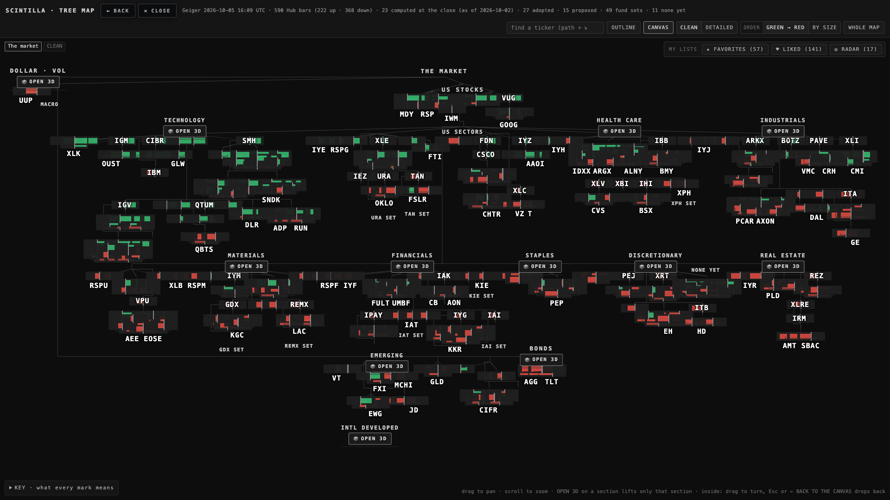
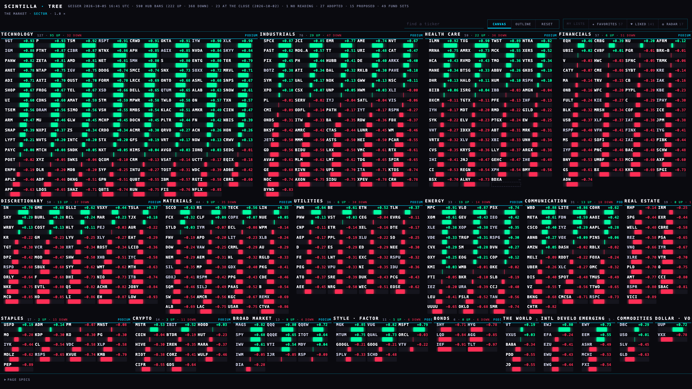
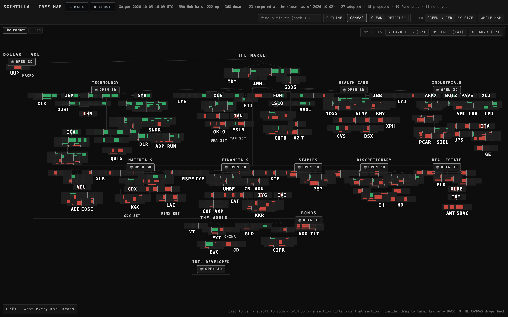
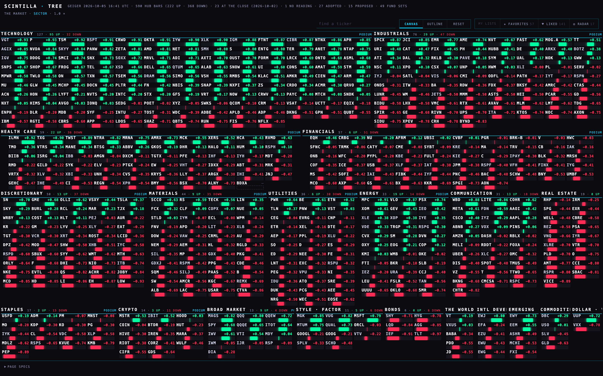
| at the home view | before · 1920 | after · 1920 | before · 1680 | after · 1680 |
|---|---|---|---|---|
| tickers printed, of 614 on the tree | 108 | 614 | 82 | 614 |
| black share of the canvas (T9's ruler: every pixel ≤ 22 in all three channels) | 81.2 % | 53.5 % | 80.9 % | 56.6 % |
| share of the canvas covered by cells and titles (the layout's black is the rest) | — | 75.3 % | — | 76.7 % |
| a tradeable's box, px | 60 × 18.8 | 83.6 × 24.6 | 60 × 18.7 | 76.8 × 22.6 |
| box against the pitch it sits on | 2.7 × wider than the pitch (boxes cover each other) | = the pitch (0.98 of the standard's 88 × 28) | 2.7 × | = the pitch (0.90 of the standard) |
| cells drawn on another cell | most | 0 (at every zoom level) | most | 0 |
| fps · canvas pan · canvas zoom · podium of 18 · podium of 141 | — | 60.6 · 59.6 · 60.1 · 60.1 | — | 60.8 · 59.2 · 60.2 · 60.1 |
The 25 % black the brief asked for was a target for boxes; a Hub cell is type and a track on the Hub's black, so by the pixel ruler about half of every cell is black by design. The honest number for "is the canvas used" is the covered share: three quarters of the canvas is cells and titles, the rest is the gaps between them and the margins of the bands. The pixel share fell from 81 % to 54 % with the same ruler T9 and T12 used.
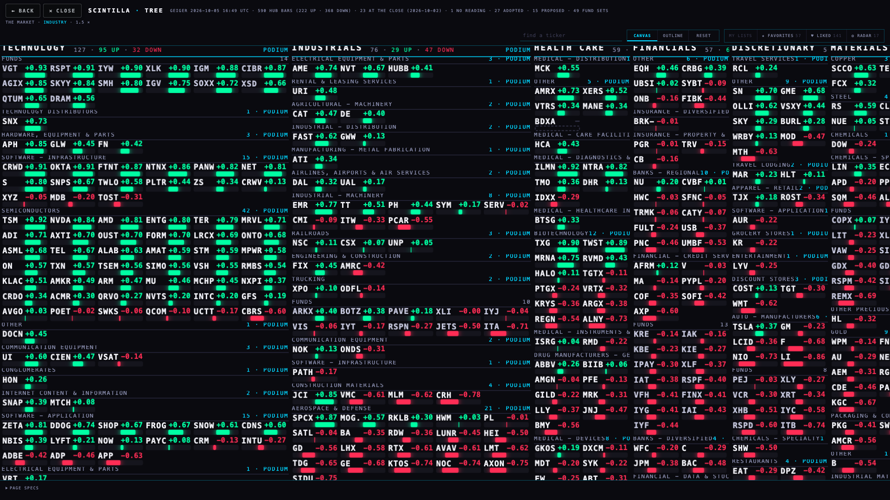
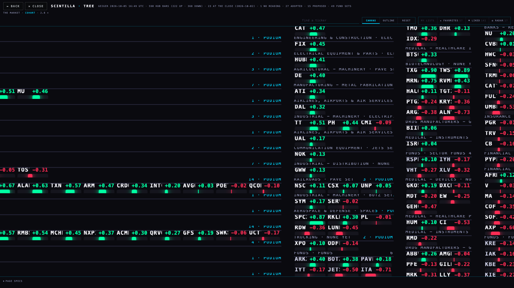
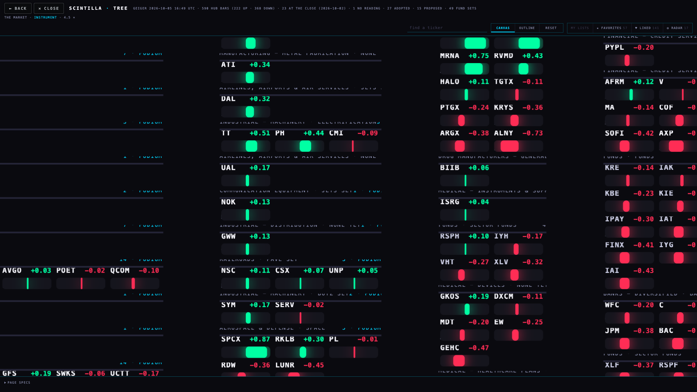
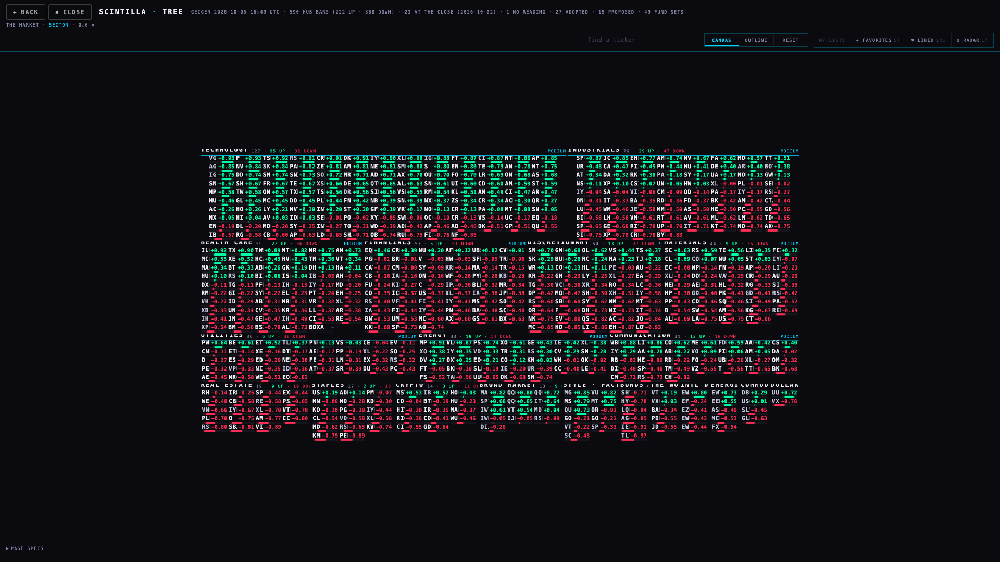
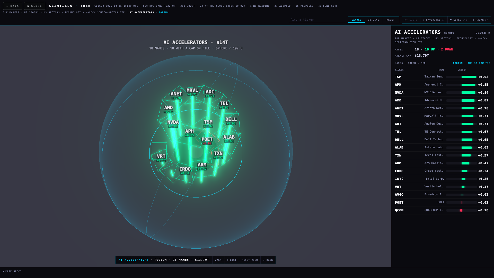
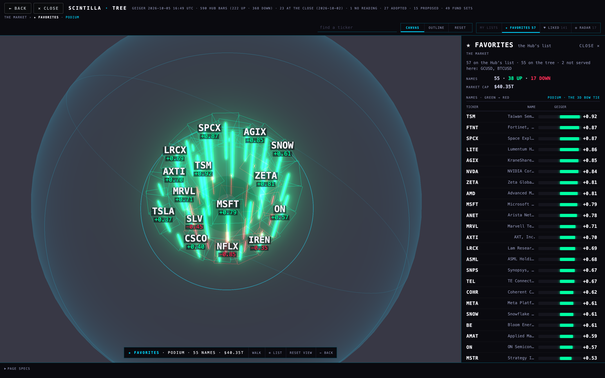
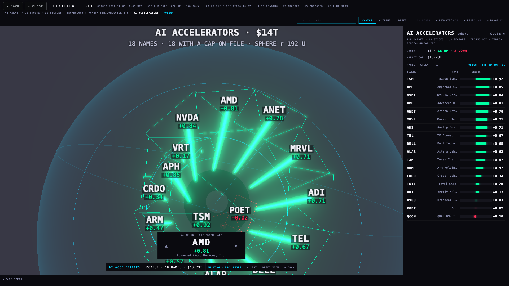
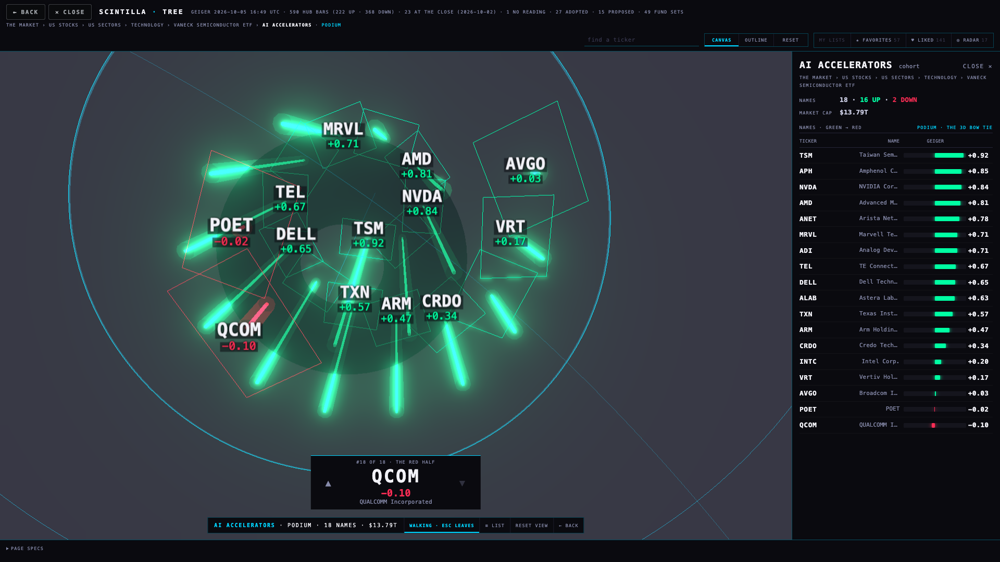
The podium opens from a block's title (PODIUM), a cohort's caption, a MY LISTS tab, or the card. Drag to turn any way, scroll to zoom, double-click or RESET VIEW = the 70° view (settled). The labels are V3's sprites: they face the camera, size with the zoom (13 px at home, 11 to 24), thin where they would overlap, and 0 of them ever read mirrored (the proof checks every view).
| # | part | now | source component (the Hub's own rule, copied by tools/extract-hub-parts.mjs) |
|---|---|---|---|
| 01 | the Geiger bar | the Hub's composite track: 9 px #15151d, radius 2, a 1 px dim centre line, bull / bear fill with the 7 px glow the Hub's own JS draws | .gsum .gs-comp .gs-cgr (index.html 3856–3859) · the fill markup the Hub's GEIGER tile builds |
| 02 | the ticker type and the readouts | ticker 700 ink .06em; values tabular bull / bear; keys 8.5 px uppercase .14em dim; the composite number 19 px | :root tokens (23) · .gs-big / .gs-lab |
| 03 | the cell · one instrument | ticker + value on one line, the Hub's track under them, no frame, the Hub's black around it; 3.2 : 1 like the Hub bar | 01 + 02 placed by canvas.js |
| 04 | the colours | bull #00FFA3 · bear #FF2D55 · cyan #00D4FF for chrome only · ink / dim / mute · black #0A0A0F; no reading = an empty dashed track; no grey fill anywhere | :root |
| 05 | the table (card, outline) | 8.5 px uppercase heads, .6 px separators, tabular numbers, the ticker in ink, the track and the value on every line | .mytab (612–619) |
| 06 | the tab rows (views, MY LISTS, the podium bar) | plain uppercase tabs, the open one in cyan with the cyan underline, hairline frame | .ctabs / .ct / .ct.on (63–68) |
| 07 | the heading (a sector block's title) | .18em ink with a 1 px cyan rule under it; the count line 9 px dim; PODIUM as a cyan word, no box | T12 option B for part 13, from the Hub's heading rule |
| 08 | the caption (industry / cohort) | 8.5 px uppercase .14em dim with a .6 px line under it; a cohort's caption carries PODIUM | the Hub's label size (.ct, .mytab th) |
| 09 | the podium (cohort / sector / list) | V3's laser coil: no boxes, beams and tread edges, bloom, the mirrored red half, camera 70° | coil3d.js = hub/v2-coil-lab-20261003 @f219335, copied whole |
| 10 | the step's label | a sprite at the tip, facing the camera, sized by the zoom, thinned on overlap | coil3d.js + label-scale.mjs (V3) |
| 11 | the market-cap sphere | volume = Σ market cap, $1 T = 80 units of radius; a name with no cap on file is listed, not counted | coil3d.js (V3's rule) · caps from company_profile through the Hub's public read path (data/market-caps-20261005.json, 526 of 614; a company without one falls back to tree.json's market value) |
| 12 | the walk | T9's rule on the coil: eye 120 units over the tread (under it on the red half), 3.2 steps back, looking 12 ahead, 480 ms a step | coil3d.js · T13 addition |
| 13 | the HUD and the podium bar | rank · ticker 34 px · value 19 px · name; ▲ ▼ as tabs | 02 + 06 |
| 14 | the card | ticker 18 px · name · the path · the Hub's GEIGER tile (track + 19 px number) · trend / momentum / cap / industry / cohort · HELD BY as the Hub's table | 01 + 02 + 05 |
| 15 | the canvas's type at every zoom | 12 px at home, never under 11, never over 24 (on 1080 tall); thinning zoomed out | label-scale.mjs (V3), the same rule as the coil's |
Parts replaced: 15 of 15. One source: tools/extract-hub-parts.mjs reads the Hub page and writes hub-parts.css with the Hub line of every block; tests/tree-standard-t13.test.mjs fails if the copy ever differs from the Hub.
Dropped: DETAILED (its extras are the zoom levels) · ORDER GREEN → RED | BY SIZE (green → red is the order, settled) · FLAT 2D · WHOLE MAP (now RESET) · the 3D whole-map view · OPEN 3D on a section (a section opens as a podium instead) · FROM ABOVE | PODIUM 3D (the orbit covers it) · the KEY panel and the hint line (PAGE SPECS holds the words) · LET GO ✕ (CLOSE on the card, Esc).
The home layout is solved for the screen the page opens on; a resize re-lays it (cells may shrink on a narrow window). The black-share target of 25 % is not met by the pixel ruler and cannot be with a Hub cell on the Hub's black — see the numbers section. The podium's 70° start hides most of the red half under the green one (settled; a drag shows it). The canvas is DOM, not WebGL: 614 cells at 60 fps on the M5 Max; an Apple TV was not measured. The day's move on the instrument level is empty until the page is given a quote source (the Geiger route carries none). Not done: a side-by-side of two spheres on the tree's cohort level (each set opens alone; V3's two-set scene is reachable through its API, not a button).
Branch hub/t13-tree-standard-20261005 from origin/hub/release-20260923 @d603a1f. The tree page: deliverables/20260929/tree-map/index.html (rewritten), canvas.js (new), coil3d.js + label-scale.mjs (copied from V3), hub-parts.css (generated), tools/extract-hub-parts.mjs, tools/pull-market-caps.mjs, data/market-caps-20261005.json, data/tree-standard.json (T10's sheet). Removed: map3d.js, layout.js, proof-t5 … t9.mjs and the seven tests that pinned them (tree-map, tree-map-canvas, tree-big-geigers, tree-clean-coil, tree-geigers-podium, tree-podium-3d, tree-podium-walk). Added: tests/tree-standard-t13.test.mjs.
The rulers: measure.mjs (before / after: tickers printed, black share, the pitch), proof-t13.mjs (the pictures and the per-level checks), fps.mjs (headless through ANGLE Metal). All headless; the chart API read live with the cross-origin check relaxed in the throwaway browser; Alan's real lists planted in the Hub mirror. Shots in shots/.
The layout: shelf packing (blocks biggest first into bands; every block in a band is the band's rows tall; the band split minimised by dynamic programming; one pitch scale k solved by bisection so the bands fit the canvas). The canvas's black between cells is the Hub's black; the gap between cells is 3 px at k = 1.